Back to QuestOfRealms overview
Game Designer Overview
This is a multi-user app for designing games. A game template
is created, from which playable game instances can be cloned.
Ensure MongoDB is running:
windows: use the start-mongodb.bat file provided with QuestOfRealms
linux: ensure the mongod service is running
Launch the app (go to the QuestOfRealms directory and run "sails lift").
You should see something like this:
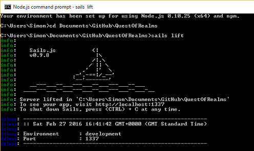
Connect your browser to localhost:1337.
You should see a page like this (click on the image for a bigger view):
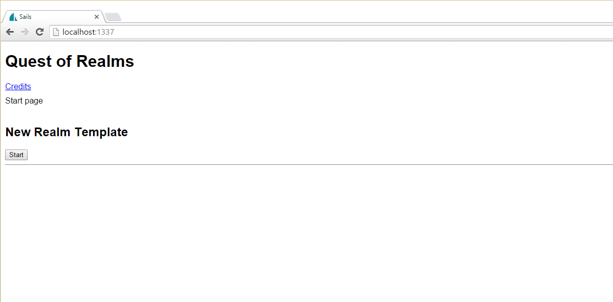
This shows existing game templates and games.
Game templates can be created, edited and deleted, and games can be created from them.
Create and edit games templates
To create a new game template, click the "start" button in the "New Realm Template" section
and fill out the form, and click "create". In this example we'll create an 8x8
map:
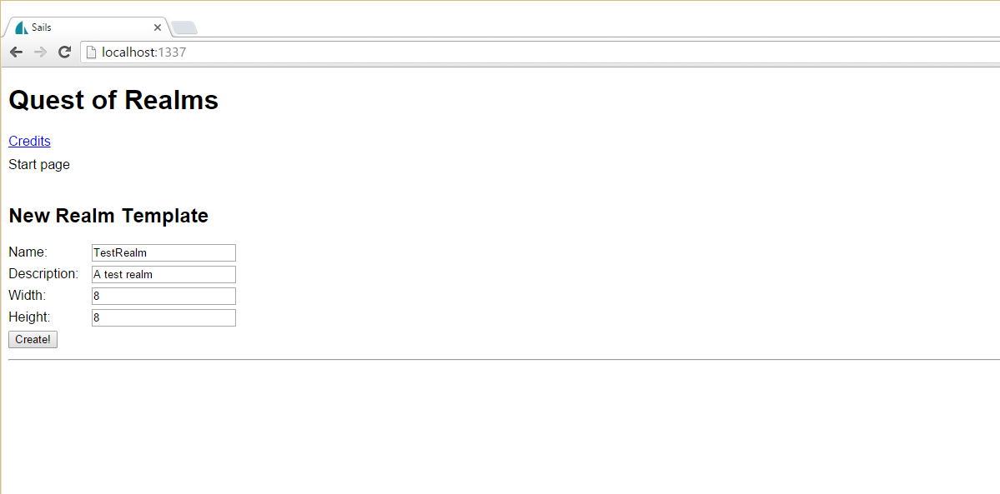
This will launch the Realm Designer, with a map grid of the
specified size.
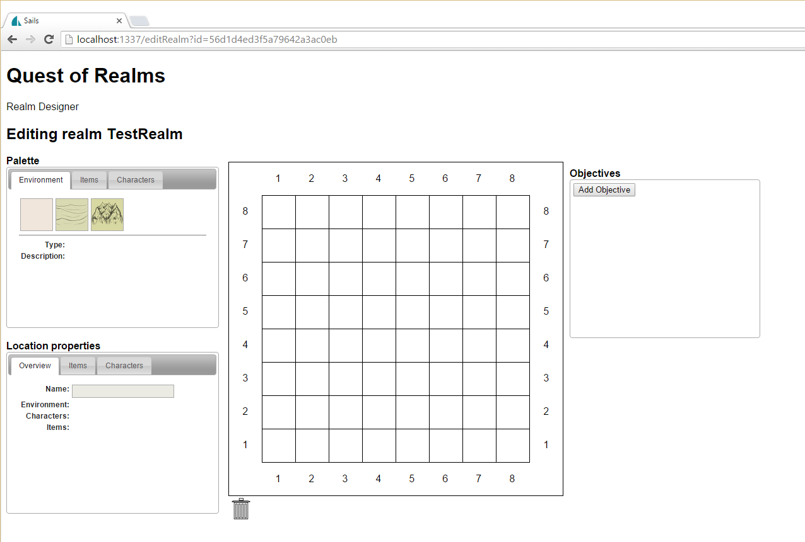
The map grid is surrounded by the various design tools.
Palette
The palette tool has tabs for the categories "Environment", "Items" and "Characters" - for setting the type of landscape in a map location, or adding items and characters to map locations that have an environment set. Each tab presents a palette of the supported options in each category, and mousing-over each palette option will display its details.
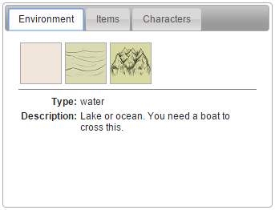
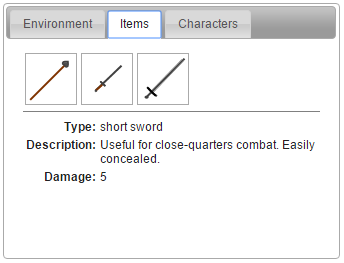
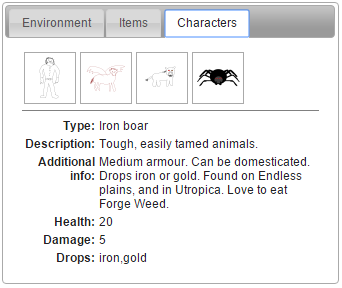
Location Properties
The Location properties tool has tabs for displaying information about a map location, or its items or characters. Mousing-over a map location will display the relevant properties. Clicking in a map location will allow it to be edited. The map location border will go red and the Location properties tool title will change to "Edit location properties". Clicking again will cancel edit mode for the current location, or clicking on another location will move straight to edit mode for the new location. When in edit mode, various properties on the Edit location properties tool will become editable.
On the Overview tab, the location name will be editable in location edit mode.
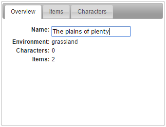
The items tab displays an icon for each item in the current location. Mousing-over each will display its properties. Clicking on an item will allow it to be edited. The item border will go red and various properties will become editable. Clicking again will cancel edit mode for the current item, or clicking on another item will move straight to edit mode for the new item.
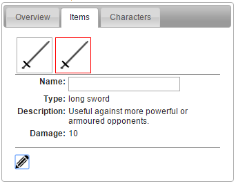
The characters tab displays an icon for each character in the current location. Mouse-over and edit behaviour is the same as the Items tab.
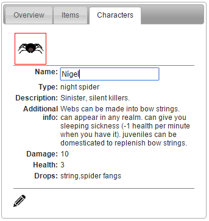
Objectives
The objectives tool is used to create a set of objectives that must be completed in sequence before the game can bo completed. The first objective must be to set the start location, and all other options are disabled until this step has been completed, at which point it becomes disabled and the other options are enabled.
Existing objectives can be deleted from the main objectives tool, and new ones added by pressing the "Add Objective" button, which launches the "Add Objective" dialog.
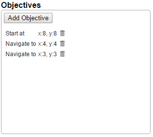
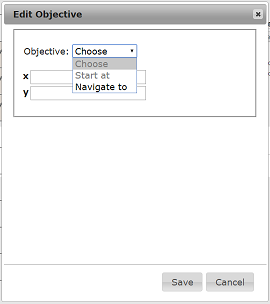
Returning to the main screen, you can see the list of existing game templates. These can be edited, deleted, or used to create games using the buttons in the table.
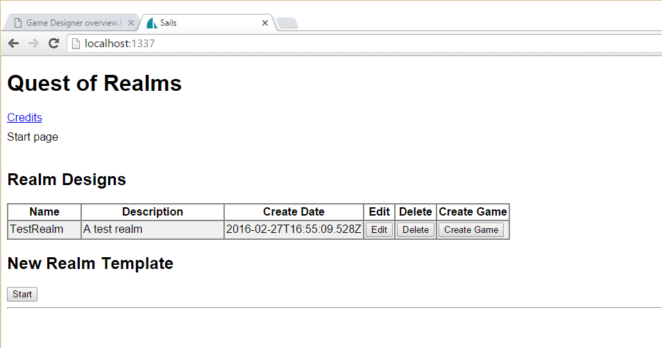
Create and edit games
Press the "Create Game" button on a row in the Realm Designs table and the "Create New Game" form will be displayed.
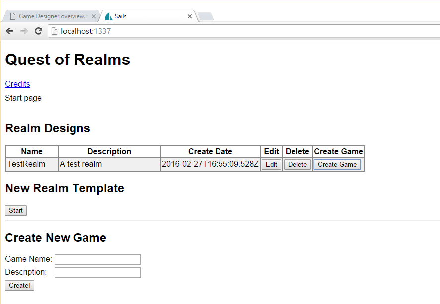
Filling this in will clone the game template as a new game which wil be displayed on the main screen.
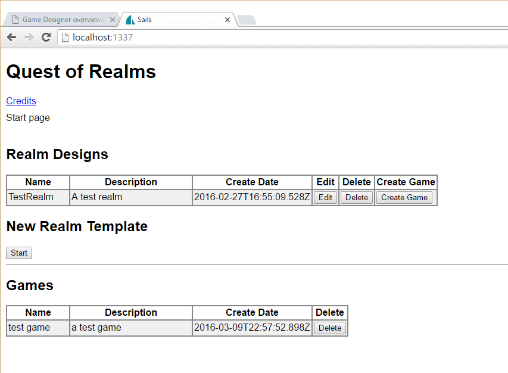
{kind=link}
{kind=link}
{kind=link}
{kind=link}
{kind=link}
{kind=link}